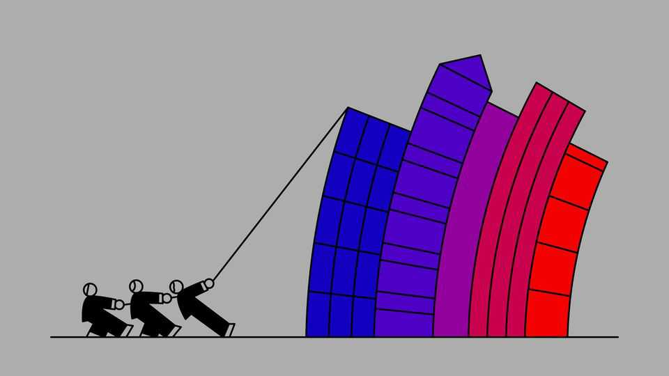

American bosses are desperately trying to de-MAGAfy
Ahead of the midterms, corporations want to win back favour with the Democrats

Oct 29th 2026
American bosses once acted on the knowledge that, in politics, the wheel always turns. Parties came in and out of power, and so companies curried favour with both Republicans and Democrats regardless of who controlled the White House or Capitol Hill.
Many bosses have abandoned that even-handedness over the past two years. Companies identified a window of opportunity to advance their agendas, says Reggie Babin of Akin, a lobbying shop. Since Donald Trump’s return to power, pushing through long-desired mergers or securing regulatory changes has often meant abandoning bipartisanship—and dignity, judging by the many corporate donations to Mr Trump’s garish new ballroom.
In a few days, however, the president is predicted to emerge from the midterm elections with a far weaker grip on Washington. Accordingly, much of corporate America has been desperately trying to scrub off its spray tan and deflate its lip filler. But rebuilding ties with the Democrats will not be easy.
One way this shows up is in the people businesses appoint to handle government relations. In January 2025, the same month Mr Trump was inaugurated, Meta elevated Joel Kaplan, its longtime Republican-whisperer, to be the social-media giant’s chief emissary. On October 20th it announced that Mr Kaplan will be leaving the business. Paramount Skydance, which recently completed its takeover of Warner Bros Discovery with the president’s blessing, has hired a former staffer from the Biden administration to help court the Democrats. Other companies that have enlisted former Democratic aides in the past six months include Palantir, a maker of data-analysis tools, as well as Polymarket and Kalshi, two prediction markets.
The tilt away from Mr Trump can also be seen in America Inc’s donations. Businesses are barred from giving candidates money from their own coffers. But they can co-ordinate donations by setting up political action committees (PACs), which solicit voluntary contributions, mostly from their executives. Those executives can also give to candidates directly or through trusts.
The Economist examined federal filings covering donations by business leaders and their families across these channels. In the second quarter of 2026, the latest period for which data are available in full, 33% of their giving went to Democrats, up slightly from 31% across 2025. Yet that vastly understates the shift, as a disproportionate share of mega-donors support Republicans. Strip out the ten biggest—including Elon Musk—and 51% of donations in the second quarter went to the Democrats, up from 36% throughout last year.
For the most part, America Inc still draws the line at supporting socialists. Of the $287m that executives donated to Democrats in the first half of this year, a mere $9m has gone to progressives, including those endorsed by the Democratic Socialists of America. Take out the donations given by Saikat Chakrabarti, most of which went to the entrepreneur’s own unsuccessful primary bid, and the figure drops to just over $4m.
America’s bosses, however, may find that even moderate Democrats have become unreceptive to their overtures. Stopping data centres is not the only anti-corporate rallying cry that has pervaded the midterms. In Iowa big agriculture is the villain; in Alaska it is big fish. One former Democratic official sums up the party’s new outlook on corporate America bluntly: “We demand blood.”
In Silicon Valley the nervousness is palpable. Chris Hughes, a co-founder of Facebook and friend of the Democrats, notes that many tech bosses spent much of the past two years “running around Washington” trying to shape regulation in their interests. One venture capitalist predicts “a reckoning” after the midterms for those who cosied up to Mr Trump. “History is not going to look back particularly favourably on those who leaned in.”
Sensing the threat, some have gone on the attack. Consider the contest for a Senate seat in Ohio. Sherrod Brown, the Democratic candidate seeking to return to the Senate, is a vocal critic of the crypto industry. Fairshake, its flagship PAC network, is spending $55m in a bid to prevent his comeback. But some prominent industry figures—including Chris Larsen, co-founder of Ripple, a crypto-infrastructure provider—have opposed the effort, worrying that it will create animosity with Democratic lawmakers, and that Mr Brown is unlikely to forget the attacks if he wins. Mr Larsen has donated through other channels to the Democrat’s campaign.
The blue wave may end up smaller than polls suggest. Yet even if the Democrats take the House of Representatives only narrowly and lose the Senate, they will be able to cause businesses grief. Control of the lower chamber would grant committee chairs the power to subpoena company files and call executives to testify. That could cause embarrassment, or worse.
Washington lawyers say they have been fielding calls since the start of this year about potential investigations. In some cases they have already been hired to parse employees’ actions and communications for indiscretions that could become public, and have been working to pick and train telegenic witnesses from their clients’ ranks. Edward O’Callaghan of Cahill, one law firm, says he has been counselling some businesses to pre-emptively meet influential members of Congress in a bid to avoid public hearings. Where Democratic support seems unlikely, they can instead equip Republicans with favourable information to use in a hearing.
In many respects the next two years will be trickier than a complete change of power. At the same time as companies try to avoid congressional scrutiny, they must maintain good relations with Mr Trump and those in his orbit who could seek the presidency in 2028. “They can’t ignore the fact that there’s still two years of business” with the current administration, says Mr O’Callaghan. Pennsylvania Avenue may soon resemble the Strait of Messina. Few will sail through unscathed. ■